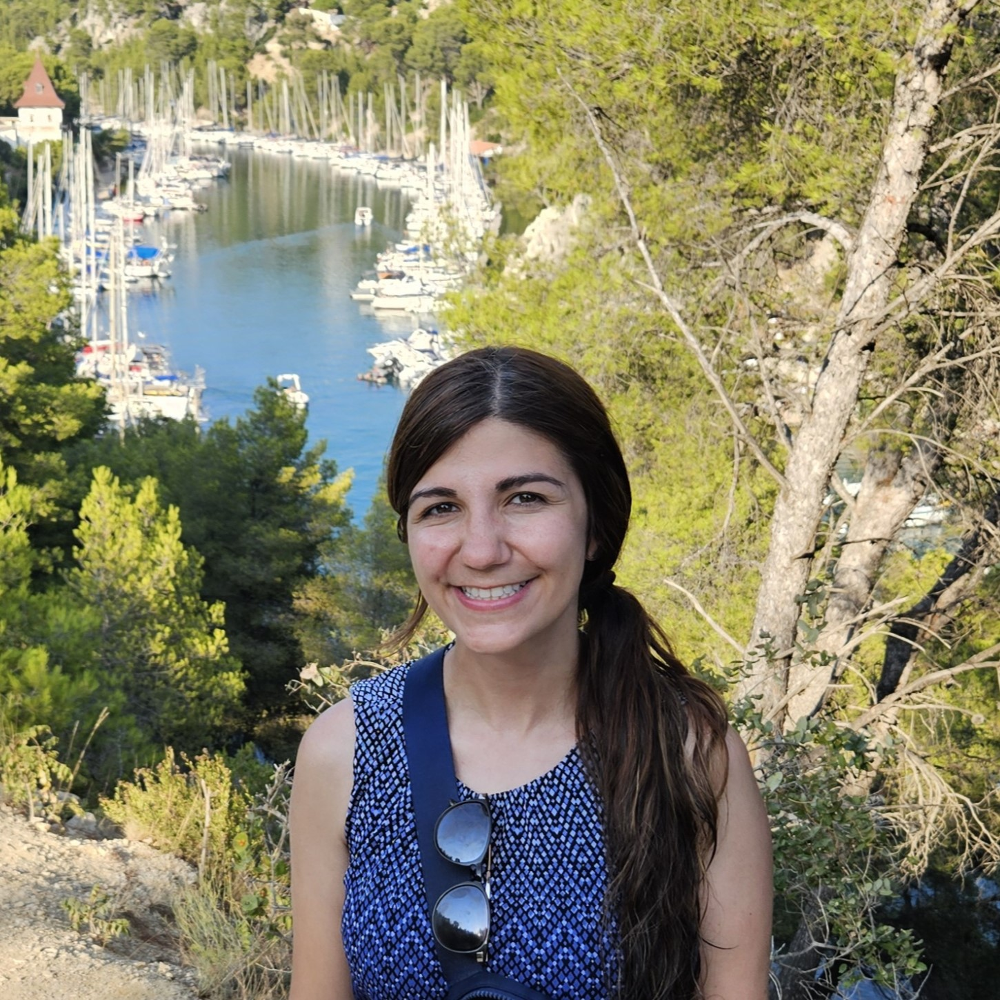

Astrid Manuel
Read bio
As a postdoctoral associate in Dr. Elizabeth Atkinson’s lab, Astrid’s current research goals involve the development of statical genomics methods for studying complex traits in heterogeneous populations in biomedical research. She aims to apply these methods to advance pharmacogenomics and personalized medicine applications. Astrid earned her PhD from the University of Texas Health Science Center (UTHealth) in Houston, TX. The title of her PhD thesis was “Translational Bioinformatics Approaches for Decoding Mechanisms and Developing Drug Repositioning Strategies in Multiple Sclerosis”. During her PhD studies, she was a Predoctoral Fellow of the National Library of Medicine (NLM) Training Program in Biomedical Informatics and Data Science (T15LM007093). In the Atkinson Lab, Astrid seeks to extend her bioinformatics expertise to the domain of statistical population-level genomics and pharmacogenomics. During her free time, she enjoys drawing, visiting art museums, and indoor rock climbing with friends.